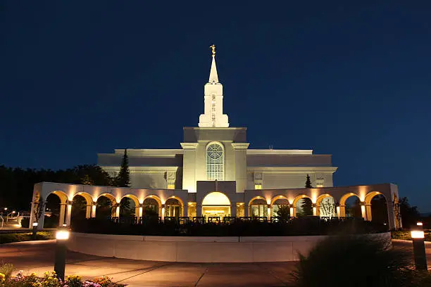
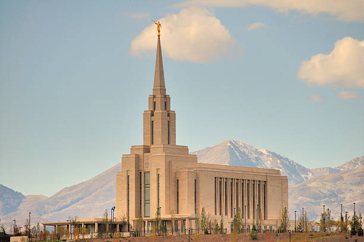
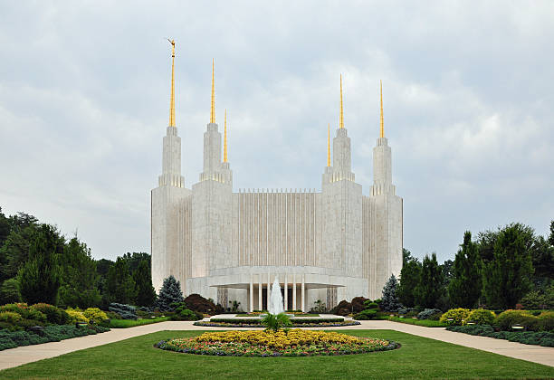
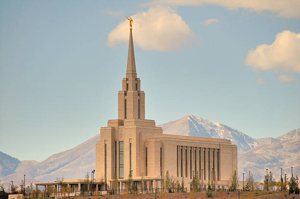
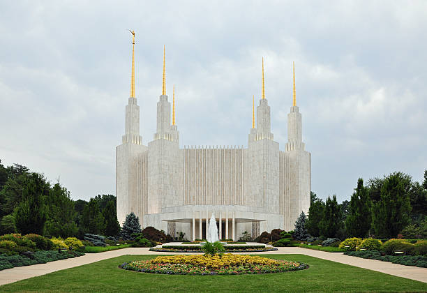
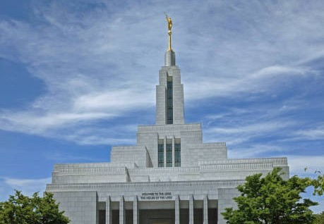
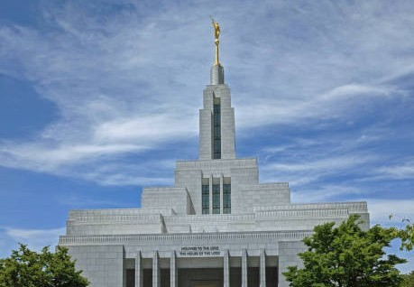
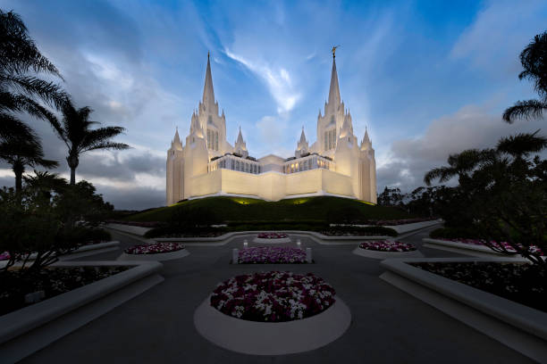
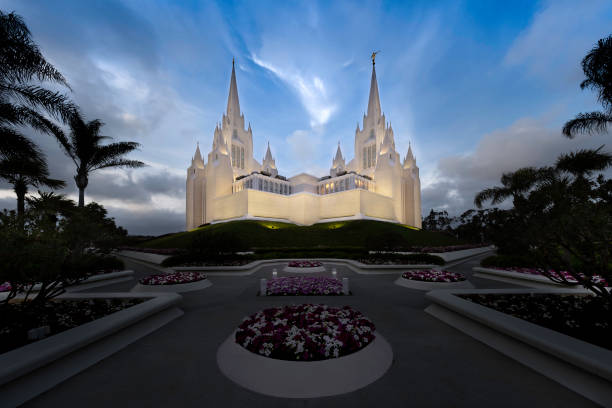

Temple 1: Beautiful Architecture

Temple 2: Peaceful Atmosphere
 Temple 3: Intricate Carvings

Temple 4: Stunning Views

Temple 5: Holy House
Temple 3: Intricate Carvings

Temple 4: Stunning Views

Temple 5: Holy House
 Temple 6: Vibrant Colors

Temple 7: Serene Environment
Temple 6: Vibrant Colors

Temple 7: Serene Environment
 Temple 8: Holy Presence

Temple 9: Breathtaking Landscapes
Temple 8: Holy Presence

Temple 9: Breathtaking Landscapes